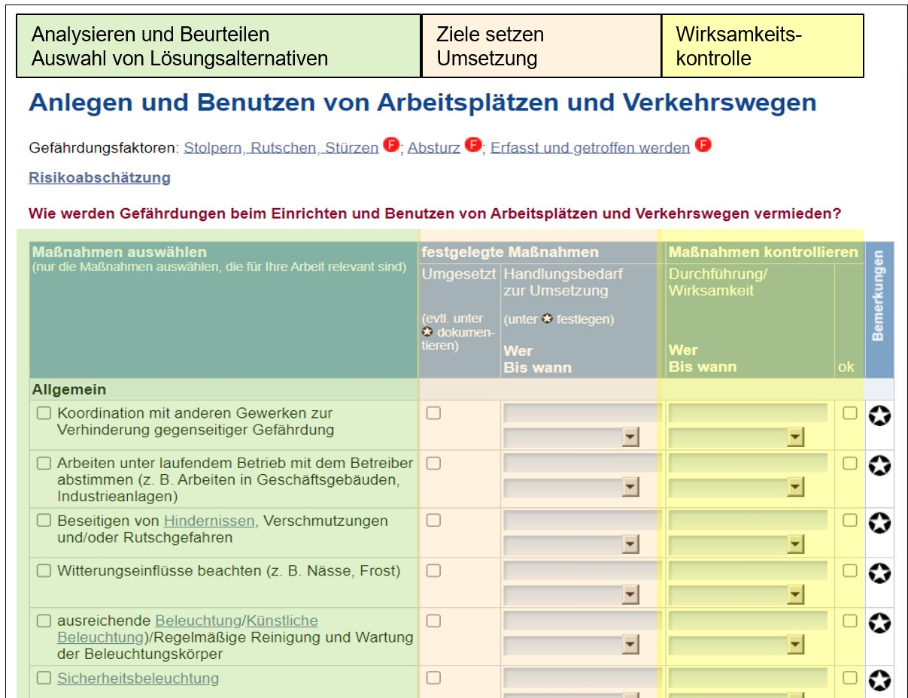
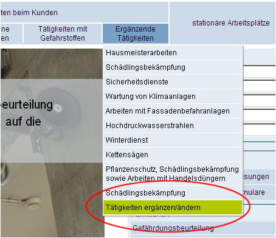
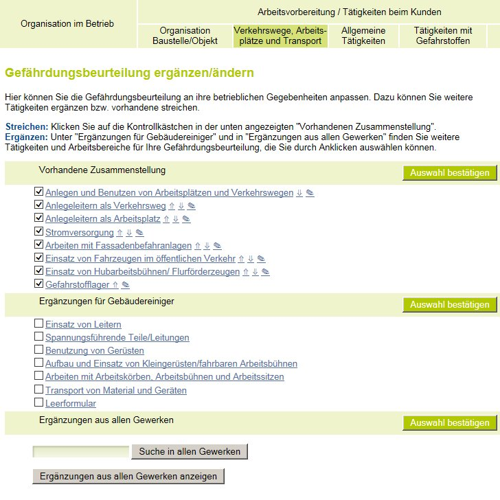
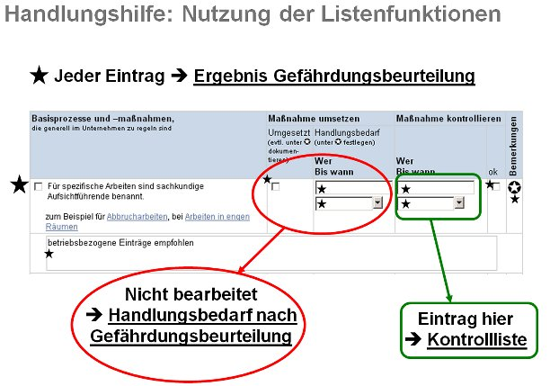
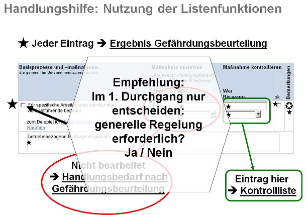

Wirkungsvoller Arbeitsschutz basiert auf einer systematischen, managementorientierten Vorgehensweise. Danach werden die Arbeitsschutzprobleme und -aufgaben als Teil eines Gesamtprozesses im Betrieb gesehen. Zielführend ist danach ein kontinuierlicher Prozess des Analysierens, Beurteilens, Umsetzens und Kontrollierens um Verbesserungen einzuleiten (nach dem PDCA-Prinzip – plan-do-check-act). Ausgehend vom Handlungsanlass bestehen diese Prozessschritte aus:
Die Auswahlbögen dieser Handlungshilfen bilden die Prozessschritte entsprechend ab:

Da der Großteil der Arbeitsabläufe und Prozesse für Baustellen/Objekte ähnlich sind, ist diese Handlungshilfe so gestaltet, dass alle Fragestellungen, die generell zu klären sind, in den beiden Themenkomplexen (Organisation in Betriebsführung und Organisation der Baustelle/des Objekts) zuerst abgehandelt werden sollen. Dieser Teil der Gefährdungskataloge ist für alle Gewerke weitgehend gleich und muss entsprechend nicht für jede Baustelle/jedes Objekt erneut bearbeitet werden. Die gewerkespezifischen Auswahlmasken können deshalb zusammengefasst und auf das Wesentliche reduziert werden. In den weiteren Menüpunkten wie z. B."Verkehrswege, Arbeitsplätze und Transport - Allgemeine Tätigkeiten - Tätigkeiten mit Gefahrstoffen"finden Sie Vorschläge für die in den einzelnen Gewerken typischen Themen. Der Menüpunkt "Ergänzende Tätigkeiten" enthält weitere Einträge mit spezifischen Inhalten und Besonderheiten.Diesen Strukturvorschlag können Sie durch die Nutzung der Ergänzungen beliebig erweitern.


Mit der Handlungshilfe lassen sich fünf Listen mit Ergebnissen generieren:

Während die Liste „Ergebnis Gefährdungsbeurteilung“ jeden Handlungsschritt dokumentiert, werden die anderen beiden Listen nur aufgrund von Ihren Einträgen aktiviert. Wenn nicht bestätigt wird, dass die Maßnahmen umgesetzt sind, wird dieser Punkt ebenfalls in die Liste „Handlungsbedarf nach Gefährdungsbeurteilung“ übernommen.
Soll beim ersten Durchgang der Handlungsanleitung nur über die Frage entschieden werden, ob für ein Thema eine generelle Regelung erforderlich ist, wird durch einfaches Anklicken, unter „Basisprozesse und -maßnahmen“ dieses Thema in die Liste „Handlungsbedarf nach Gefährdungsbeurteilung“ übernommen. Die derart reduzierte Anzahl relevanter Themen kann dann sukzessive abgearbeitet werden.
